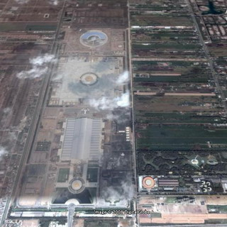

さて、「泰国珍寺修行 北へ」のはじまりはじまり〜。
っとその前にバンコクに程近いパトゥムターニーからプロローグ代わりに。
前日深夜に入国し、微妙な時差ボケもあり頭はフラフラ体はガクガク。
しかしヤル気は満々。北に向かうフライトまでの数時間を惰眠に使ってはもったいない。
早速タクシーを拾い、とある寺に行ってみた。
車が徐々に近づいて来ると運ちゃん、「どの入口から入るのか？」とか「中は広いから車で回った方がいい」とか「そのまま空港まで送っていこうか？」とか挙句の果てには「明日カミさんと実家のコーンケン（これから私が飛ぼうとしている東北タイの地方都市）に里帰りするから一緒に乗ってくか？」などとセールストークに余念がない。
フッフッフッ…こちとらタイには何度も来ているのだよ。その手は桑名の焼ハマグリ。君は正面の入口に停車したら私を降ろしてとっとと帰って明日の里帰りの準備でもしてくれたまえ。
…などと思っているうちに、正面の入口でタクシーが停まる。さあ、いよいよ修行の開始だぁ！
と。
いきなりUFOじゃん！
さらにその奥に果てしなく続く境内の様子が明らかになってきた。

その広さに唖然。お口あんぐり。
「…あのう…やっぱり車でぐるっと回っちゃってください…」
その名はタンガーマイ寺院
我々の想像を遥かに超えるスケールの現代宗教施設だ。
↓コレが全容である。

（先程のUFOは一番下の辺りです）
ご覧の通り果てしなく広い。
お台場と同じくらいの面積だったりする。
タイでは勿論の事、世界屈指の規模を誇る宗教施設といってもいいと思う。
勿論仏教系の寺院なのだが伝統的なタイの仏教寺院の面影など微塵もない。
だってどう見てもUFOにしか見えないもん。
一瞬UFO信仰の新興宗教かとも思ったが、仏教系の寺院だそうだ。


境内の看板を見るともんのすごい規模の瞑想場があるようだ。
タイのお寺を愛するあまり幻覚を見ているのでは…と思った程のスケール。

先程のUFOの後にはこれまた巨大な鉄骨造の集会場みたいな建物。

決してカルフールやビッグC、テスコロータスといったショッピングセンターではないので念のため。

つかどうみてもショッピングセンターか空港のターミナルっぽいんですけど。

この辺りから奥は建設中で一部しか入れないのだが、運ちゃんにとりあえず行けるトコまで行ってもらう。
さらにもうひとつの金色に輝くUFO（みたいな仏塔）が現れた。

頑張ってもココまでしか寄れなかったが、ここのホームページによると一個一個のドットが実は仏像らしい。
その数百万体とか。
この金色のUFOを囲むように四角い建物が建っている。
その大きさを後で地図で確認すると1辺が1キロ四方の建物でした…

建物の中に入ってみる。
あまりにも広すぎて距離感が喪失していく。
UFOの向こう側にある建物は同じ建築物だというのに遥か遠くに見え、若干霞んでさえいる。
そんな気の遠くなるような屋内（とはいえ建設中なのか、最初っからそのつもりなのか壁はない）の一画にテントが張ってあった。
広大な空間のほんの一画に寄り添うように集まっているテントの群れ。
そこでは信者の方々が瞑想に耽っているようだ。
小さなテントと正面にデーンと建つUFOの大きさの対比が印象的だった。

テントの群れを抜けて中央の広場に出てみる。
真っ白な空間に照りつける太陽。
まるで巨人国に迷い込んだかのようだ。

そこは我々が感じる事の出来るスケール感を凌駕した空間だった。
まるでこれが仏の国のスケール感なのだ、と言わんがばかりに。
と。遥か先にもう一個金色のUFOが見えた。
ええええ〜まだあるの〜！
…しかしそこは建設中だったので車でも近寄る事が出来なかったので、これにて参拝終了。
ほぼドライブスルーの御気楽修行であったことはこの寺の規模に免じて目をつぶってください。

最後に再び入口のUFOへ。
ここはメモリアルホールだそうな。
基壇部のレインボーが余計UFOっぽいっすね。
テントに篭っていた信者さんによると大晦日にそれはそれは盛大な催し物があるらしい。
写真を見せてもらったがこの広大な空間にびっっっっっっっっっっっっっっっしり信者が座って瞑想していた。
そういえば寺の入口に厳ついガードマンがいて入場者をチェックしていた。
実は大晦日にタイ国内で一番人が集まる場所はココなのかもしれない。
去年の大晦日はバンコクの中心街で爆弾テロがあったので警戒しているのかもしれない。
そんな事さえ考えさせられる規模の寺、いや、一介の寺とさえも呼んでいいのかどうか判らない「現代の聖地」であった。
寺からの帰り道、タクシーの運ちゃんは「あの寺はたくさんの金持ちや外国人が寄付をしているんだ」などとブツブツいっていた。
その不満そうな表情は「そんな金があったら俺にくれればいいのに」といっているようだった。
一方、私は私で「こんだけゴージャスなモノをつくるんならすっげ大仏とか地獄とか作ってくれればいいのに…」と思っていた。
結局みんな自分のことしか考えてない、っつーことですね。
で、次回はイサーンからお届けするよ。